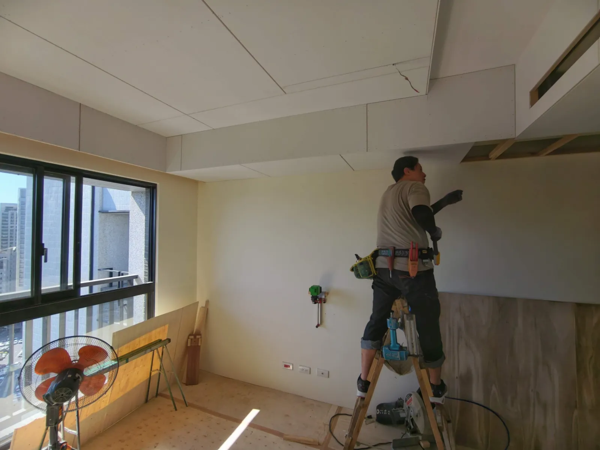
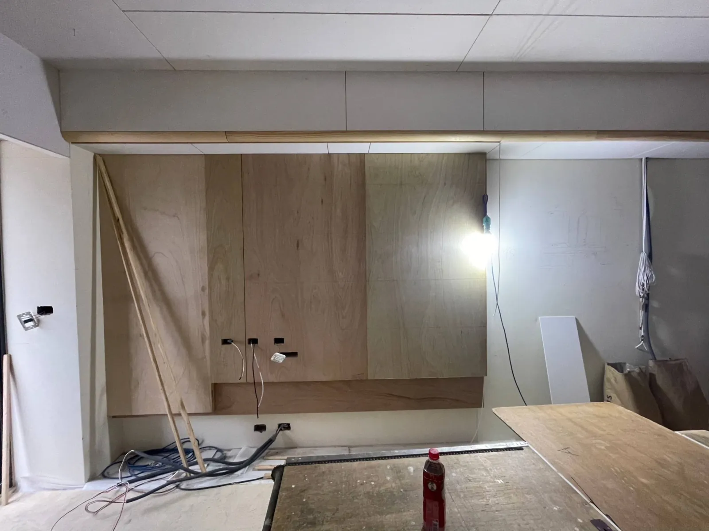
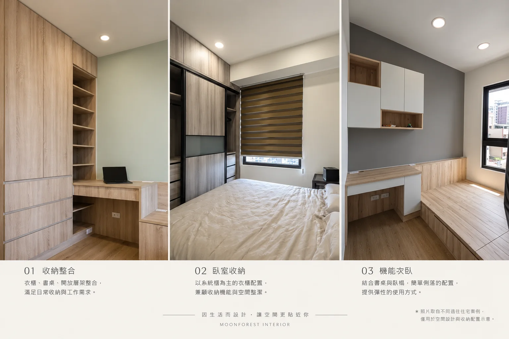

第一次聽到 140 萬，可能會覺得已經是一筆不小的裝修預算。但真正把它放進一間三房兩廳的新成屋裡，如果希望客廳、餐廳、三間臥室、收納、天花、燈光全部做到完整的設計感，其實沒有想像中充裕。
這篇不談模糊的一坪多少錢，而是從玥森設計實際住宅案件的工程內容出發，把約 140 萬的預算拆開來看：木作、系統櫃、水電、油漆分別會吃掉多少預算，以及當預算不適合讓每個空間都細節滿滿時，我會怎麼取捨。
本文金額依實際住宅案件內容整理並取約數，施工與空間照片取自玥森設計過往住宅案例，用於說明不同工程與預算配置；實際費用仍依屋況、設計內容與材料規格而異。
先看答案：140 萬大概花去哪裡？
三房住宅工程預算拆解
長條用來比較各項目的相對工程量；金額為實際案件整理後的約數，並非固定比例。
最值得注意的不是 140 萬這個總數，而是其中有多少錢已經被固定工程吃掉。
以這類三房住宅來說，木作與系統櫃加起來就可能接近 90 萬。再加入油漆、水電、燈具、設計與現場管理後，真正可以拿來做「更多造型」的空間，其實比想像中有限。
這也是為什麼我不太喜歡單純用「一坪幾萬」回答裝潢預算。坪數一樣，櫃體量、天花範圍與施工內容不同，最後的數字可以差很多。
第一個容易低估的地方：木作造型比想像中更花工
約 45～50 萬的木作，一部分是天花板、窗簾盒、包樑、冷氣出回風整合與必要收邊；另一部分則是電視牆、牆面層次、格柵與特殊造型。真正容易被低估的，往往是後者。
造型木作不是多釘一塊板而已。從現場放樣、裁切、結構打底，到轉折、異材質銜接與最後收邊，細節越多，投入的工時與人力就越高。
基礎木作解決設備與介面整合，造型木作則增加空間層次。預算有限時，應先把兩者分開判斷：必要功能要保留，純粹為了視覺效果的造型，再依重要程度取捨。

第二個預算大戶：系統櫃不一定貴，怕的是選配逐項累積
系統櫃的基本櫃體並沒有想像中昂貴。以一般住宅的基本配置來說，一個空間常可先用約 10 萬上下理解；但三房住宅從玄關、餐廳一路做到三間房，空間數量加起來，總額自然會來到 40 萬以上。
真正容易讓金額聚沙成塔的，是抽屜、拉籃、升降五金、玻璃門、特殊門片、燈帶、轉角配件與內部細分。單看每一項都不算特別高，但分散在全室多個櫃體裡，最後就會形成明顯差距。
即使加入部分選配，系統櫃相較於現場以木作訂製造型櫃體或書桌，通常仍是較經濟的做法。預算規劃的重點不是把系統櫃視為昂貴工程，而是確認每個空間真正需要哪些功能，哪些配件可以簡化。

140 萬的取捨：每個空間都能完整，但不一定都要細節滿滿
客廳、餐廳與三間臥室的基本機能都可以完整安排；但如果每個空間都希望有同等層次的造型、材質轉折與訂製細節，140 萬就會很快被分散。
這時候有兩種做法。
一種是每個空間都做一點，最後客廳少一點、餐廳少一點、房間也少一點。
另一種則是先問：每天真正長時間使用、也最影響整體居住感受的是哪些空間？
我通常比較傾向第二種。
與其每個空間都做一點，不如把預算花在每天真正會使用的地方。
次臥不一定需要「設計感做滿」
次臥就是很典型的例子。
如果房間主要用途是睡覺、收納，或目前甚至還沒有固定使用者，我不會為了讓「全室看起來都有設計」而硬塞大量造型。
衣櫃、書桌、床邊收納先把功能做好，材料與顏色保持一致，就已經可以得到乾淨完整的空間。
少做一面造型牆、少一段複雜天花，單看一間房也許差異不大；但三個房間累積起來，就是可以重新分配到公共空間的預算。

所以，我會把比較多預算留給公共空間
客廳與餐廳通常是一個家使用時間最長、也是視線最開放的地方。
天花高度、燈光、電視牆、收納比例，以及不同材質之間怎麼銜接，都會直接影響整個家的感受。
如果總預算有限，我會寧願讓次臥簡單一點，也希望每天回家第一眼看到的公共空間是完整的。
這不是把房間「做差」，而是把不同空間的重要程度排出來。
預算控制不是把原本 140 萬的內容硬壓成 100 萬，而是重新設計一個真正值 100 萬的版本。
如果預算只有 100 萬，我會先從哪裡調整？
必要機能與視覺造型必須取捨時，會先保留真正影響生活的部分。例如家中有兩個孩子，兩間次臥需要的衣櫃、書桌與床不會因為預算減少就消失；可以先拿掉的，是不影響使用的裝飾木作與格柵。
先減少純裝飾造型
優先調整格柵、造型牆、複雜門片等視覺工程，而不是先砍基礎施工與必要機能。
再檢視櫃體總量
保留明確需要的衣櫃、書桌與收納；未確定用途的房間，不必入住前就把每面牆做滿。
保留入住後難施工的項目
水電、冷氣、必要天花與基礎收邊應優先處理。
允許部分空間使用活動家具
不是所有收納都必須在第一次裝修時變成固定櫃體。
真正有效的預算控制，不是要求每個工種一起打八折，而是重新決定哪些東西現在值得做。
所以，三房兩廳到底要準備多少裝潢預算？
沒有看到格局與需求以前，我不會只因為「三房兩廳」就給一個標準答案。
至少要先知道：
- 新成屋還是中古屋
- 有沒有拆除與泥作
- 浴室是否翻修
- 天花板做到什麼程度
- 哪些空間需要系統櫃
- 是否更換地板
- 水電是局部修改還是全面更新
- 冷氣、窗簾、家具、家電是否包含在同一筆預算
這篇約 140 萬的配置，可以理解成一個「新成屋、固定收納與木作比重較高，並把設計重點集中在主要空間」的例子，而不是三房兩廳的標準報價。
三房裝潢預算常見問題
三房兩廳裝潢 100 萬夠嗎？
有可能，但取決於屋況與施工範圍。新成屋如果控制櫃體數量、減少裝飾性工程並使用部分活動家具，可以重新安排預算；如果包含大量木作、全室收納、地板或浴室翻修，則需要提高預算或縮小施工範圍。
為什麼同樣三房，有人 80 萬、有人 150 萬？
房間數不是主要計價依據。拆除、泥作、木作、系統櫃、水電修改與材料規格的差異，都可能讓相同坪數的住宅產生很大的價格差距。
系統櫃和木作哪個比較省？
兩者用途不同。系統櫃適合標準化收納；木作則常用於天花、包樑、造型與特殊結構整合。住宅通常是兩者搭配，而不是單純選擇較便宜的一種。
裝潢預算不夠時應該先砍什麼？
優先檢查純裝飾工程，再考慮哪些櫃體可以減量、哪些空間可以使用活動家具。水電、冷氣及入住後難以重新施工的基礎工程，不建議單純為了壓低總價而犧牲。
正在規劃台中的三房住宅？
如果你現在也正在規劃新成屋，不需要一開始就知道每一種材料或每一個櫃子的尺寸。
可以先準備格局圖、預計入住時間、希望施作的空間，以及大概的預算範圍。
我會先一起確認這筆預算最需要解決哪些生活需求，再決定哪些值得現在做、哪些可以簡化、哪些可以留到以後。
聊聊你的裝修需求